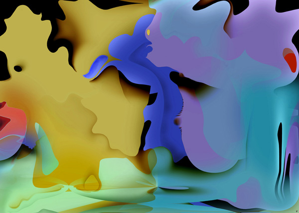
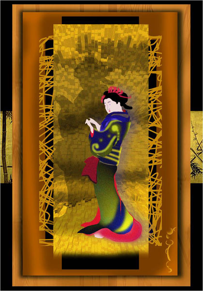
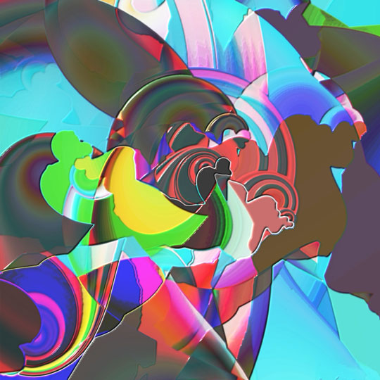
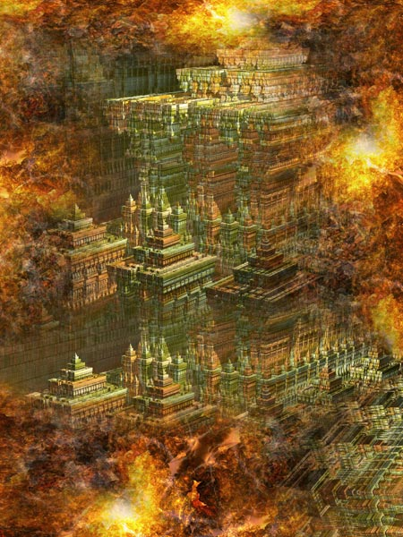
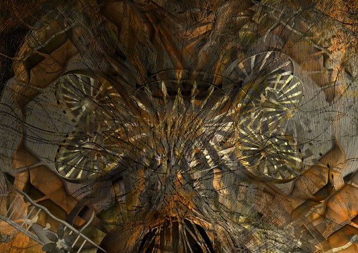
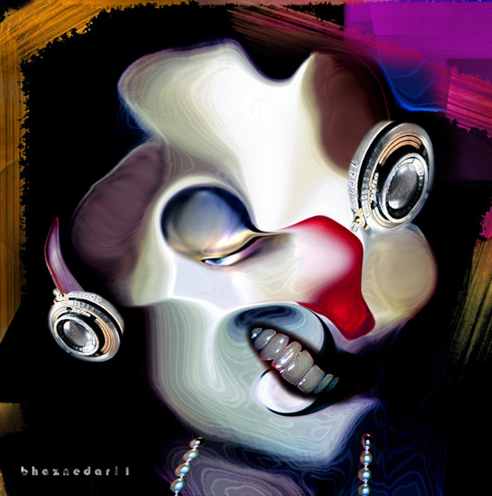
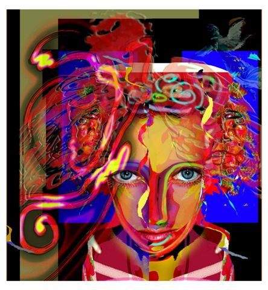
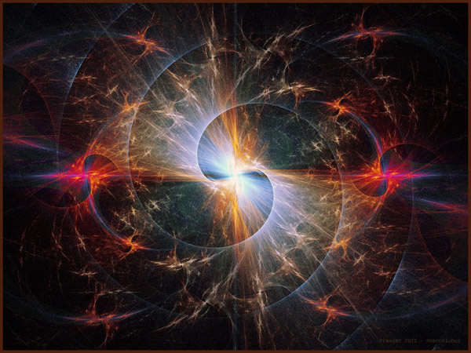
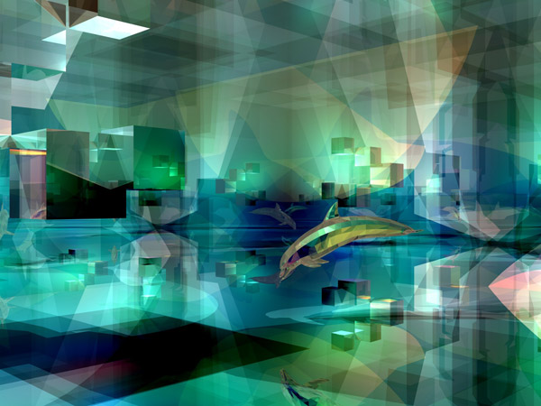

Click image to visit MOCA gallery where image resides
Mandy's Wishes 
by Aurelia Zack
10/11/2021
Japanese Korean Fusion 
by Linka G
10/12/2021
H12-2 Konstrukt 
by Marianne Wiedenfeld
10/13/2021
Red China in Tibet 
by David Makin
10/14/2021
What the Eye Never Sees
by Jose Izquierdo
10/15/2021
Epic Sky 
by Vincenzo Corrado
10/16/2021
Secret Face 
by Banu Haznedar
10/17/2021
Under My Religion 
by Monica Malbeck
10/18/2021
b>#Hercólubus 
by Fran Sat
10/19/2021
Dolphin Playground 
by Pat Goltz
10/20/2021